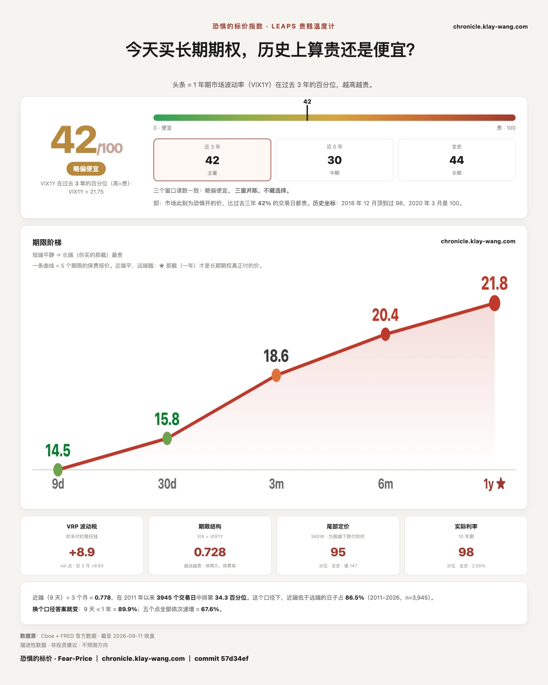
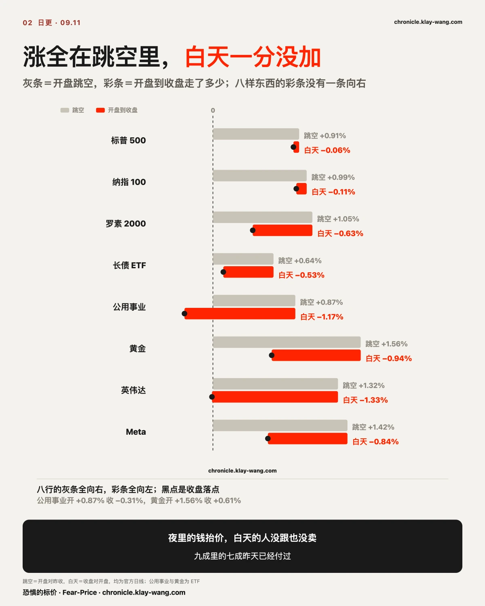
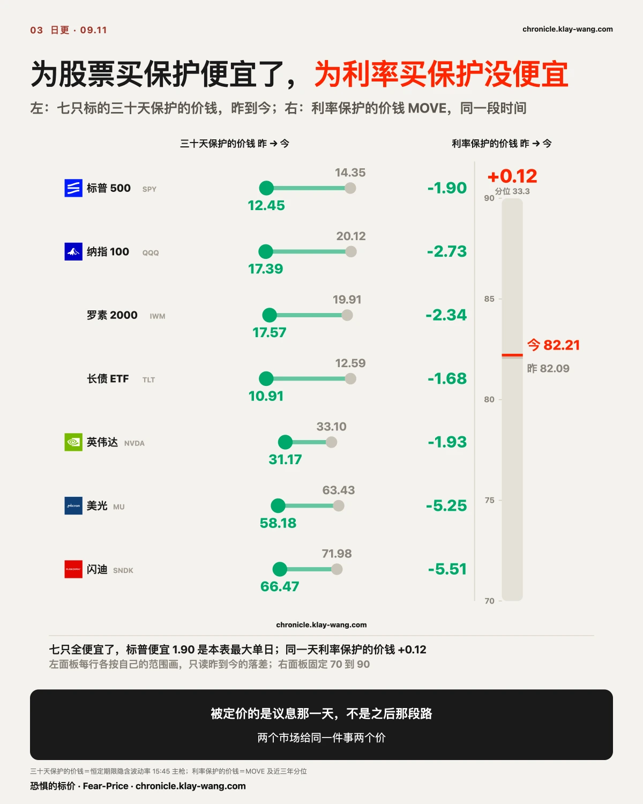
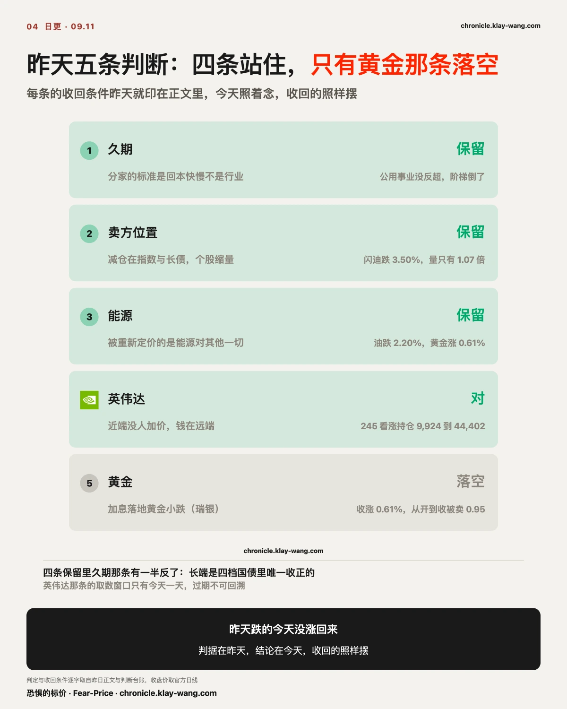
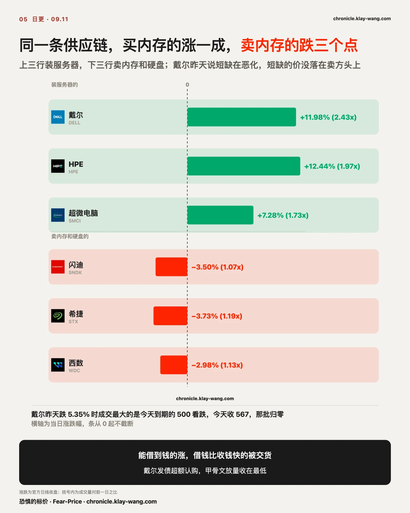
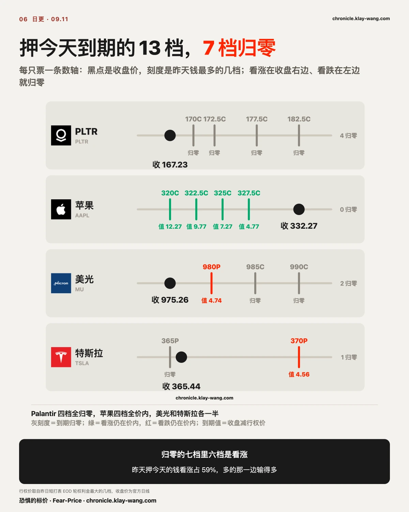

恐惧的标价指数（Fear-Price Index）· 2026-09-11 · 读数 42.3/100：一年期波动率 VIX1Y 为 21.75，处于近三年第 42.3 百分位，高即贵。逐日台账与口径 → chronicle.klay-wang.com · 转载注明：恐惧的标价指数 · Fear-Price
昨天 52.4，今天 42.3，一天退 10.1 个分位，近三年第 20 大的单日退幅。五档期限：九天 14.47、一个月 15.84、三个月 18.60、六个月 20.39、一年 21.75。九天那档一天退 3.23，一年期只退 0.48。
九天这一档正好盖住 09.16 的议息。昨天写它被单独加了价，今天那笔加价被整个拿走。为极端下跌买保护的价钱 147.02，仍在全史第 94.9 分位，便宜的是眼前这两周，极端下跌那一侧没便宜。

8 月 CPI 环比 0.4%，同比 3.4%，两个都符合预期。核心环比 0.3%，预期 0.2%，是 5 月以来最高；核心同比 2.4%，符合。汽油涨 3.9%，前两个月连跌之后反弹，一项占了全月涨幅三分之一以上；住房 0.3%，食品 0.1%。
昨天 PPI 是柴油一项占商品涨幅三分之一以上，核心比预期低；今天 CPI 是汽油一项占全月涨幅三分之一以上，核心比预期高 0.1。两天是同一回事：能源把头条抬起来。区别在核心那一层，昨天比预期低，今天比预期高。
数据前三家大行的预测都没到 0.3：美银 0.22%，小摩 0.21%，花旗 0.184%。小摩事前给核心高于 0.30% 只留了 10% 的概率，说真到了标普会跌 1.5% 到 2.5%。9 月加息押注一周前 49%，周三 61%，周四 71%，今天数据后推到九成上下。
标普涨了 0.85%。小摩说的跌和实际的涨差了三个点。
我的判断是：这份 CPI 没有改变任何人的仓位。核心高出的 0.1 全是汽油带的，住房 0.3% 没有加速，市场只认住房和服务那一层，那一层没变。所以押注从七成推到九成，股票反而涨：多出来的两成没有新钱进来，昨天七成里已经付过的钱被重新点了一遍。如果下周一标普三十天保护的价钱回到 14 以上，说明市场还是把它当新信息，这条判断推翻。

标普开盘 +0.91%，收 +0.85%，白天 −0.06%。纳指 100 开 +0.99%，白天 −0.11%。罗素开 +1.05%，白天 −0.63%，收在全天区间最底 4%。长债开 +0.64%，收 +0.11%，区间位 9%。黄金开 +1.56%，收 +0.61%。公用事业开 +0.87%，收 −0.31%。
跳空是夜里的钱给的，白天是能交易的人给的。今天夜里的钱把价格抬上去，白天的人既没跟，也没卖。一句话解释就是：加息这件事昨天就已经按七成的概率付过钱了，今天数据把概率推到九成，没有人因为这个数改主意，所以既没人追着买，也没人卖。
真正动的是保护的价钱。为股票买三十天保护，二十九个标的今天没有一个变贵。标普 14.35 退到 12.45，纳指 20.12 退到 17.39，长债 12.59 到 10.91，闪迪一天便宜 5.51 点，美光便宜 5.25。一年期几乎没动，标普 18.05 到 17.88。便宜的全是近端，便宜的是议息那一天的价。
同一天为利率买保护的价钱（MOVE）82.09 到 82.21，分位 33.3，一分没便宜。给利率做保护的人没有退保，债券市场没有把这件事当成已经落地。

我的判断是：今天便宜下来的是议息那一天的保护，加息之后那段路的保护没便宜。 给股票做保护的人退了，给利率做保护的人没退，两个市场对同一件事给出两个价。如果 09.16 之后利率保护的价钱跌回 76 以下，说明给利率做保护的人也退了，这条判断收回；如果股票三十天保护的价钱在 09.15 之前重新回到 14 以上，说明今天的便宜是周度到期日的对冲自然消失，不是有人退保，这条判断也收回。今天到期的合约有 6.69 亿，这部分不能不算。
有一种说法是买预期卖事实，下周加息落地就会有人卖。落在加息本身，它不成立，预期已经付过，事实没有新钱可卖。它成立的地方在剩下那一成：九成不是十成，那一成才是不对称的那一边。不加息，长端利率和黄金那边的反应会比加息大得多。议息之后那一周的保护今天有人在买，标普 09.25 到期的 740 看跌两万六千张，是持仓的八倍，760 看跌两万两千张，九倍半；同一天 785 看涨两万三千张，六倍。两边都在加，加的是议息之后那段路。
久期。立的是分家的标准是回本快慢不是行业，收回条件是公用事业反超必需消费且债券阶梯倒转。今天必需消费 +0.35%，公用事业 −0.31%，没反超；一到三年 −0.06%，七到十年 −0.19%，二十年以上 +0.11%，阶梯倒了，长端是四档里唯一收正的。两条只成立一条，判断保留，但要记下：阶梯今天倒了。
卖方位置。立的是减仓在指数与长债放量、个股缩量，收回条件是存储链放量续跌。闪迪跌 3.50%，成交量只有昨天的 1.07 倍；美光跌 0.22%，0.83 倍。缩量续跌，是无人问津，没有人在交货。保留。
能源。收回条件是油与黄金同向下跌。今天美油跌 2.20%，黄金涨 0.61%，方向相反，保留。油轮运费涨 11.83%，油自己在跌，跟霍尔木兹的是船不是油。
英伟达。立的是近端没人加价，钱在远端，判据是 12 月 245 看涨的结算持仓增量要超过成交量的三成。今晨结算持仓从 9,924 涨到 44,402，增了 34,478 张，是昨天成交的 85%。对，钱住在远处。今天它三十天保护的价钱再便宜 1.93，股价开 +1.32% 收 −0.03%，收在区间最底 4%。
黄金。瑞银那本账落空了：加息落地黄金该小跌，今天黄金收涨 0.61%。但它开盘涨 1.56%，从开到收被卖了 0.95 个点，方向在往瑞银那边走，只是没走到。

昨天跌得最多的是回本最慢的那一头，今天它们没有涨回来。存储继续跌：闪迪 −3.50%，希捷 −3.73%，西数 −2.98%。买它们的货的那一头涨了一成：戴尔 +11.98%，成交量 2.43 倍；HPE +12.44%；超微电脑 +7.28%，1.73 倍。
戴尔昨天在高盛会议上说，内存和加速器的短缺在恶化。今天买内存的涨、卖内存的跌，短缺的价没有落在卖方头上。戴尔自己另有三条消息：RBC 首评，发债被大幅超额认购，即将进标普 100。三条都是它借钱和被买的理由，它昨天跌 5.35% 时成交最大的合约是今天到期的 500 看跌，今天收 567，那批归零。
甲骨文给出另一个答案。昨天盘后它拿出了回本时间表，盘后涨 4.35% 到 159.59。今天开盘 +7.51%，最高 165.99，收 150.28，跌 1.74%，成交量 1.41 倍，收在全天区间最底 3%。放量、冲高、收在低位，有人趁着时间表把货交了。同一天 SpaceX 的 CFO 说算力基建的回本周期可能不到一年，它涨 2.04%。
我的判断是：回本时间表拿得出来的，市场也分两种，能借到钱的涨，借钱比收钱快的被交货。 如果下周闪迪、美光反弹而戴尔回吐一半，说明今天的两头只是戴尔自己那三条消息，不是供应链的分家，这条判断推翻；如果甲骨文收复 159.59，说明今天是消息日换手，不是交货，这条也推翻。

Palantir 那片 09.02 记下的看涨集群，170 到 182.5 四档，今天收 167.23，全部归零。它 09.03 一度值买入价的 2.9 倍，住下的六成没有在最高点走。
苹果收 332.27，昨天钱最多的 320、322.5、325、327.5 四档看涨全部价内，320 那档从 6.15 到 12.27。美光收 975.26，985 和 990 看涨归零，980 看跌值 4.74。特斯拉收 365.44，365 看跌归零，370 看跌值 4.56。
十三档里七档归零，归零的六成是看涨。昨天押今天到期的钱看涨占 59%，多的那一边输的多。
